Bitget Wallet 钱包注册与 U 卡开通
创建 Bitget Wallet，绑定邀请码，并了解 U 卡开通流程。
Bitget Wallet 钱包注册 & U卡 开通
关于 Bitget Wallet
Bitget Wallet 是亚洲最大、全球领先的一站式 Web3 钱包，服务全球超 9,000 万用户，支持助记词、MPC、社交登陆等多种钱包形态，覆盖 130+ 公链与百万币种。产品功能涵盖 Swap 交财、支付、DApp 探索等，聚合数百个主流 DEX 与跨链桥，支持最广泛的多链交易，并设有 3 亿美元风险保障基金，全面保护资产安全。愿景是 Crypto for Everyone —— 打造一个让 10 亿人都能日常使用的消费级 Web3 钱包，让加密更简单、更可信、真正融入日常生活。
Bitget Wallet 下载
安卓手机进入邀请链接注册（邀请码 web32026888）：https://web3.bgw.live/share/2nBYei?inviteCode=web32026888
苹果手机登陆港区ID，在 App Store 中检索：Bitget Wallet 下载
Bitget Wallet 注册，绑定邀请码教程
注册与创建钱包
下载与启动: 打开 Bitget Wallet App,在欢迎页面点击“创建钱包”
选择创建方式:新建助记词钱包
创建成功: 完成设置后,系统会提示“钱包创建成功”,即可开始探索。
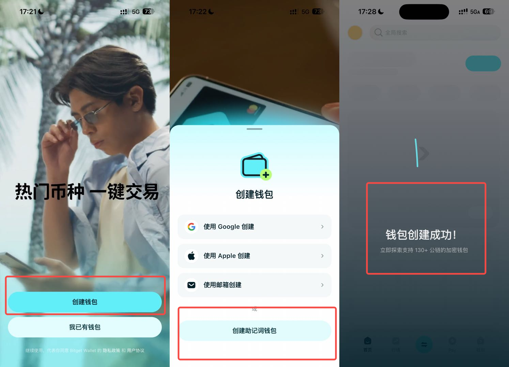
创建路径2
在创建方式页面,选择 “使用Googel创建” 。
完成授权: 按照弹窗提示授权访问你的社交账号。
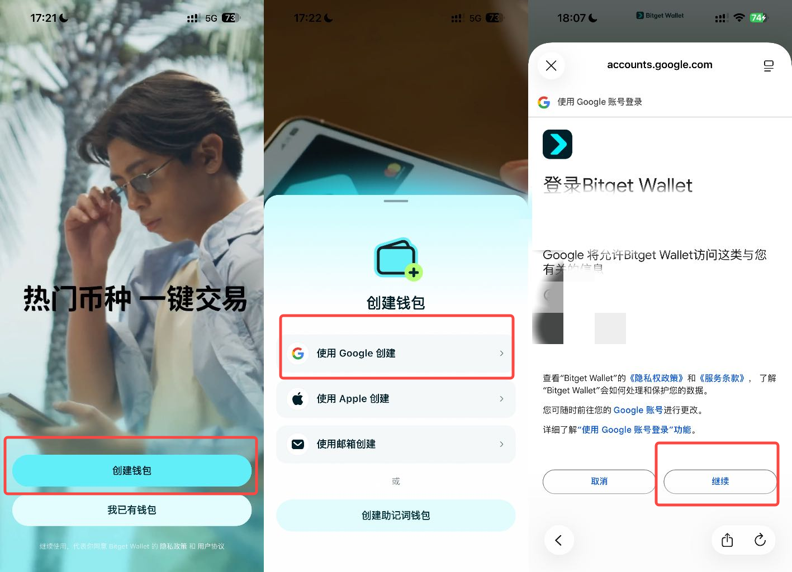
绑定邀请码，享受永久25%交易返佣！
在 App 首页,点击左上角个人头像进入“设置”。
选择“邀请中心”。
在邀请中心页面找到“绑定好友邀请码”。
输入邀请码 web32026888，点击“绑定”即可完成。
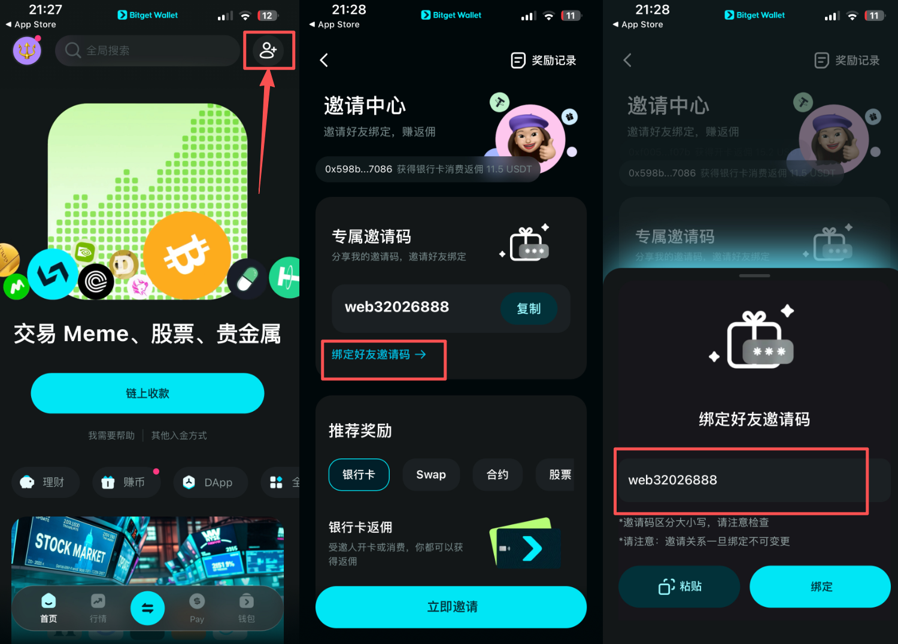
Bitget Wallet Card是什么？
Bitget Wallet Card 是由 Bitget Wallet 联合瑞士合规银行 Fiat 24 推出的 MasterCard 加密支付卡，用户可使用 USDT/USDC 等加密货币充值，并在全球所有支持 MasterCard 的商户消费，同时可绑定 Apple Pay、Google Pay 、微信支付、支付宝等支付方式。目标是让加密支付变得简单便捷、融入日常生活，让更多人用 Bitget Wallet Card 轻松完成每一次支付。
为什么选择 Bitget Wallet Card（Fiat24标识‼️）
Bitget Wallet Card 免除所有常见的加密支付手续费，让你的资产在全球自由流动，无隐藏成本、无磨损。
核心亮点
0 手续费额度：每月 400 U 内消费 0 手续费（含外汇费、充值费、转换费）更多零费说明
Moew 封面早鸟用户每月额外增加 200u 额度(已结束)
多端绑定：支持微信、支付宝、Apple Pay、推特蓝 V 等
全球通用：可在所有 Mastercard 商户使用
0 年费：免费开卡，用卡无负担
使用优势
虚拟卡：线上线下全覆盖
支持人民币支付：
200 元以下消费与人民币支付一致
200 元以上消费按微信/支付宝标准手续费结算
大陆护照可 KYC：合规、安全，用卡不中断
用户场景开通教程
✍️开始注册前，先准备以下材料，可以加快流程进行：
有效电子邮箱
有效护照原件
提前下载用于身份认证的 App
苹果用户：在 App Store 下载 “ReadID Ready” App
安卓用户：见 安卓下载“Ready”教程
特别提醒：为保证开卡成功，您的钱包中 Arbitrum 链上需要至少有 10 USDC 资产
1、下载 Bitget Wallet App，创建或导入助记词/无私钥钱包
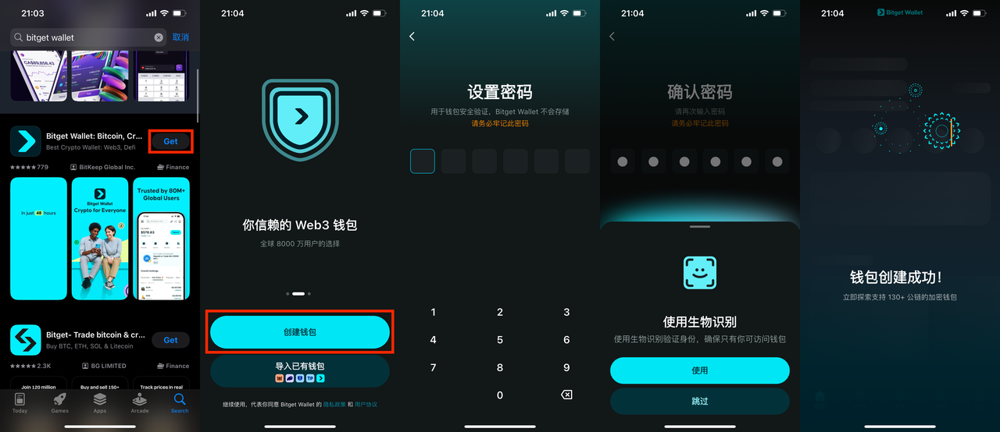
2、下载身份认证软件
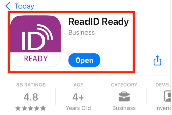
3、充值（如果 Arbitum 链已有 USDC 则可忽略此步）
需确保 BG Wallet 在 Arbitrum 链上资产余额不低于 10 USDC，用于开卡验资。
若余额已达到要求，可跳过后续充值步骤。
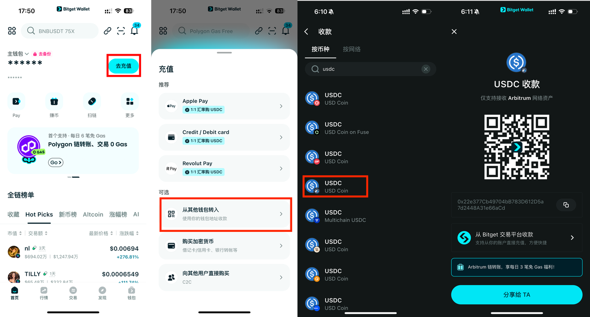
4、注册 Fiat24 卡银行账户
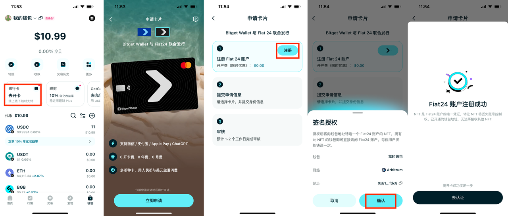
5、使用护照认证 kyc 及人脸校验
为了保证您开卡顺利，中国大陆用户在申卡流程中不要使用VPN。
安卓用户注册时需手动开启GPS定位。（下拉手机主屏幕，在检索中输入“GPS”, 手动打开GPS）
系统自动匹配的GPS地址可能与实际地址略有出入，无需修改，修改可能导致KYC失败。请保持原样提交。
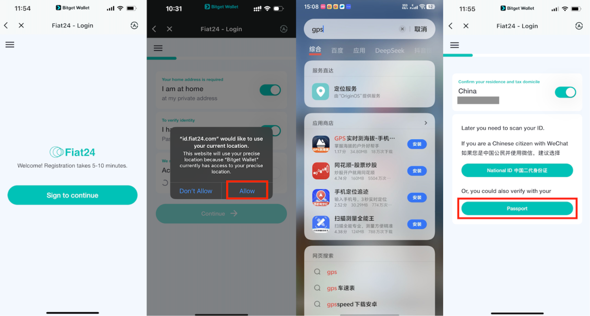
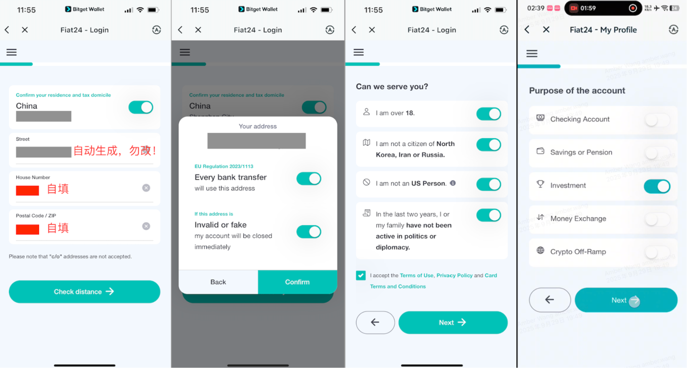
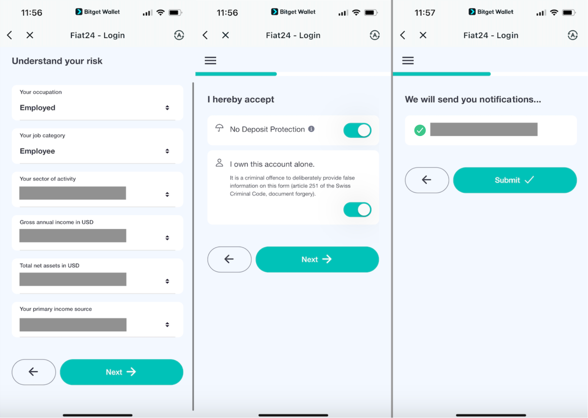
点击“开始”后，应用将跳转至 ReadID 以完成证件验真程序。
请按照 ReadID 提供的步骤完成证件验真。
请按照指示扫描您的护照照片页。
翻到最后一页进行扫描，确保没有反光和指纹
将手机放在护照上进行NFC芯片读取，读取过程中不要挪动手机，不要带着手机壳扫描
请按照指示进行人脸识别验证。
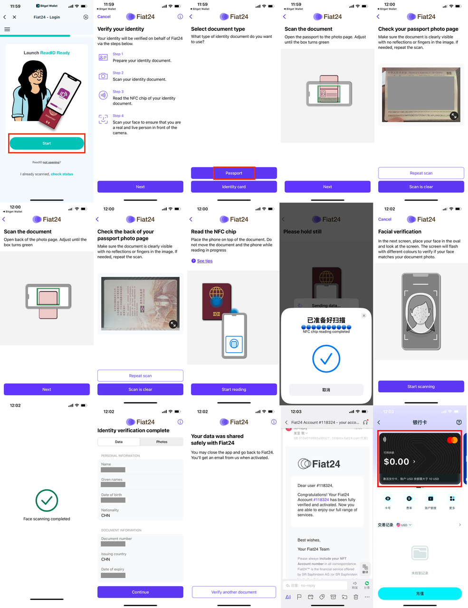
6、支付与币种
使用建议：支付时将以商户本地货币结算。Fiat24 支持充值 USD/CHF/EUR/RMB。在非上述币种国家，将自动换汇为当地货币结算。
默认设置：充值成功后，在卡面管理中将默认支付币种设为您有余额的币种（如充值 USD，则设为 USD，见图示）。
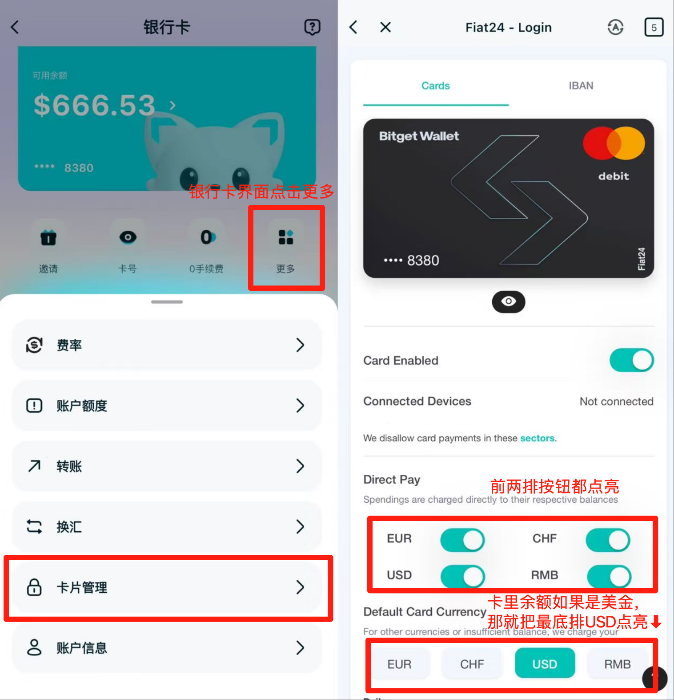
常用平台绑定教程
1.如何绑定支付宝
打开支付宝，依次点击「我的」-「银行卡」，选择「+添加银行卡」。
输入卡号、有效期和安全码（CVV），点击「同意协议并添加」验证成功后即可完成添加。
注：卡号、有效期和安全码（CVV）可在 Bitget Wallet 账户内查看，点击银行卡展开 - 点击卡号。
常见问题
绑定支付宝应用后，付款有手续费和支付限额吗？
支付宝绑定国际银行卡支付，单笔金额 ≤ 200 元免收手续费，单笔金额 > 200 元收取交易金额的 3% 作为手续费。
国际银行卡支付的具体额度会根据风险情况动态调整，请以页面显示为准。
2.如何绑定 ApplePay
打开 iOS 手机自带的「钱包」软件，依次点击右上角「+」-「借记卡或信用卡」，下滑选择「添加其他卡片」。
点击「扫描或添加卡」-「手动输入卡片详细信息」，输入卡号、姓名、有效期、安全码（CVV），然后点击右上角「下一步」-「同意」支付条款和条件，完成添加卡片。
如提示验证卡片，按照页面提示点击「下一步」，通过电子邮件收取验证码以验证卡片。查看邮件中的验证码 ，点击「输入验证码」并输入验证码，最后点击右上角的「下一步」完成激活。
注：卡号、有效期和安全码（CVV）可在 Bitget Wallet 账户内查看，点击银行卡展开 - 点击卡号。
3.如何绑定 ChatGPT Plus
通过 ChatGPT 网页端订阅
登录 ChatGPT 官网：在手机或电脑浏览器打开 ChatGPT 官方网站，通过邮箱等方式完成注册或登录。
如需切换页面语言：依次点击左上角菜单栏 → 账户名称 → Settings（设置）→ Language（语言）。
选择 Plus 套餐并订阅：点击左上角「获取 Plus」，下滑页面选择「获取 Plus」进入配置套餐页面。
填写信息：输入卡号、有效期、安全码（CVV）以及账单地址详细信息。确认无误后，点击下方「订阅」按钮。
账单地址需与 IP 所在国家一致，例如：瑞士 IP → 填瑞士地址，日本 IP → 填日本地址。
通过 App Store 订阅
在 iPhone 中添加卡片
打开 iPhone 的「设置」，点击 Apple ID 账户名进入 Apple 账户页面。
进入「付款与配送」，填写卡号、有效期、安全码（CVV），点击「完成」添加。
在 ChatGPT App 内订阅
打开 ChatGPT App，通过邮箱等方式注册或登录账号。
点击页面顶端「升级」按钮 → 「升级仅需 $19.99」（以实际价格为准）。
按提示连按两下侧边按钮确认订阅信息，即订阅成功。
4.如何订阅 X Premium
登录 X 官网
在手机或电脑浏览器打开 https://x.com，通过邮箱或手机号登录你的 X 账户。
登录后如需切换界面语言：可点击左上角头像 →「设置和隐私」→「辅助功能、显示与语言」→「语言」进行设置。
进入 X Premium 页面
点击左上角头像打开左侧菜单，点击「Premium」或访问 https://x.com/i/premium，进入订阅页面。
选择你所在地区的价格方案，点击「订阅」。
填写卡片信息
在支付页面，输入 以下信息：
卡号（Card Number）
有效期（Expiry Date）
安全码（CVV）
账单地址（Billing Address）
确认信息无误后，点击「订阅」或「Subscribe」按钮完成支付。
账单地址需与当前 IP 所在国家一致，优先推荐瑞士和美国。例如：瑞士 IP → 填瑞士地址，美国 IP → 填美国地址。
常见问题
1.什么是 Bitget Wallet 银行卡？
Bitget Wallet 银行卡是一款让用户能够便捷使用加密资产，进行日常消费的支付工具。我们通过与受瑞士金融监管局（FINMA）监管的金融科技公司 Fiat24 合作，将其服务集成至 Bitget Wallet App，用户可在钱包内完成充值、查看余额与全球消费。该银行卡支持绑定支付宝、微信、Apple Pay 等主流支付平台，覆盖线上消费与全球线下商户。
2.如何申请 Bitget Wallet 银行卡？
将 App 升级至最新版本后即可申请银行卡。需确保钱包 Arbitrum 链持有不少于 $10 USDC 的资产，并使用支持 NFC 的手机完成身份认证。申请路径：App 首页 → 底部导航栏「钱包」→ 银行卡 → 去开卡。
3.为什么钱包资产需大于 10U 才能申请开卡？
这是为了确保申请用户具备基础的资产安全性和活跃度。该金额在开卡后可由用户自行决定是否充值至银行卡，或随时转出，不作强制冻结或使用限制。
4.卡片费用说明
开卡费：免费
年费：无
充值费率：无（按先扣除1%再在消费后返还的形式免除）
消费费率：无（消费后返还外汇磨损）
如涉及货币兑换，按实时汇率结算，0 外汇手续费。
5.未消费资产是否可以转出？
当前暂不支持将充值后的资产转出，相关功能已在规划中，敬请期待后续更新。
6.如何绑定支付宝/微信？
与绑定其他银行卡的流程一致：打开微信或支付宝，进入「添加银行卡」页面，填写 Fiat24 卡号、有效期和安全码，随后输入短信验证码，即可完成绑定。
7.支持哪些币种？
目前支持 USD、EUR、CHF 和 CNH（离岸人民币）四种币种的充值、转账及换汇操作。建议用户充值时优先选择 USD，以降低汇兑损耗。
8.为什么提示我的护照无法注册？
请确认你所使用的证件有效期是否超过三个月。如证件即将过期（有效期不足三个月），建议更换有效期更长的证件，或使用直系亲属的护照进行注册。
9.是否支持消费提醒与限额管理？
支持。Fiat24 的法币资产以 ERC20 代币形式存在，分别为 USD24、EUR24、CHF24 和 CNH24。消用户在消费前需链上授权（approve）对应代币，钱包将同步提示资产变动，并支持查看授权状态与调整限额。
依据《中国人民银行非银行支付机构网络支付业务管理办法》，目前人民币支付限额为：
单笔交易不超过 3,000 元
每月累计不超过 50,000 元
每年累计不超过 600,000 元
10.是否支持申请实体卡？
暂不支持实体卡申请，目前仅支持虚拟卡形式使用。
11.可在哪些场景使用 Bitget Wallet Card？
银行卡支持绑定微信支付、支付宝、Apple Pay 等主流平台，同时可用于全球超过两百万家 Mastercard 商户，包括淘宝、美团、X、Amazon、TikTok、ChatGPT、Claude、Grab 等线上与线下场景。
12.为什么通过微信/支付宝消费会收取 3% 手续费？
当单笔消费金额低于 200 元时，无需支付任何手续费。若高于 200 元，支付宝或微信将收取 3% 的手续费，该费用由支付平台收取，并非 Bitget Wallet Card 所产生。
13.如何关闭银行卡支付功能？
可在 App 内银行卡管理页面进行关闭。关闭后该卡将无法用于支付，日后如需重新启用，可再次进入设置页面恢复功能。